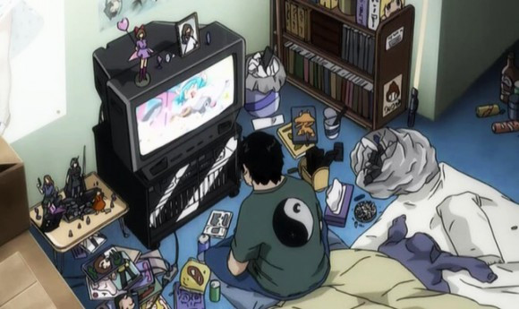

What Does Hikikomori Mean?
Simply put, the term hikikomori refers to extreme social withdrawal (in Japan). In Japanese, this word literally means "pulled inward, being confined", and can be used to refer to the condition or the people affected by this condition.
Generally, these people hardly see the light of day, living within the confines of their rooms. Hikikomori will only venture outside if necessary, e.g. food. However, some do not even have to leave at all; their parents take care of everything - from the food to the bills.
What Do Hikikomori Do?

Without ever leaving the indoors, there's really not much that most hikikomori can do but to consume entertainment, eat, sleep and repeat. They don't work, so they are heavily dependent on their parents for everything related to living, and thanks to the internet and modern day electronics, they will always have something to do.